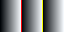

A realistic document, written the way people actually write them — and deliberately including the awkward parts, because a sample that only shows easy cases tells you nothing.
Teams hold documents in Word, LibreOffice, EPUB and markdown at the same time. Getting between those formats is supposed to be boring. When it is not boring, it is usually because something was silently dropped.
A conversion you cannot inspect is a conversion you cannot trust.
— every migration post-mortem, eventually
| Phase | Owner | Starts | Status |
|---|---|---|---|
| Inventory | Priya | 2026-01-06 | done |
| Pilot | Sam | 2026-02-17 | in progress |
| Migration | Ops | 2026-04-01 | not started |
| Decommission | Ops | 2026-09-15 | not started |
.docx and .odt to markdown for the
index.docx for anyone who needs to edit in
WordConvert a directory in one pass:
find . -name '*.docx' -print0 |
xargs -0 -P8 -I{} ferrodoc {} -t gfm -o {}.mdThe Python equivalent, for a pipeline that already has one:
import ferrodoc
with open("report.docx", "rb") as f:
text = ferrodoc.convert(f.read(), "docx", "gfm")An indented code block, which is a different construct:
ferrodoc -f markdown -t html handbook.mdInline code with special characters: a | b,
<div>, --flag, and a literal backtick:
`.
Text with entities & symbols — an em dash, "curly quotes", an ellipsis…, a non-breaking space, and unicode: café, naïve, Ω, 日本語.
Struck-through text and text with a footnote.1
Five inlines no writer test used to reach through this file:
underlined text, small caps, a
span carrying an id and a class,
and H2O beside E=mc2. They are here because
docs/gates.md claims --samples keeps them
found, and until this paragraph existed no sample document contained one
— the claim was wider than the corpus behind it, which is the defect
this file is supposed to catch.
A link with a title: the spec. A bare autolink: https://example.com/status. An email: ops@example.com.
An image:

Raw HTML block, which not every target format can hold.
Nested quoting:
Outer quote.
Inner quote, with a list:
- one
- two
Contact ops@example.com with
questions. See the LICENSE file for terms.